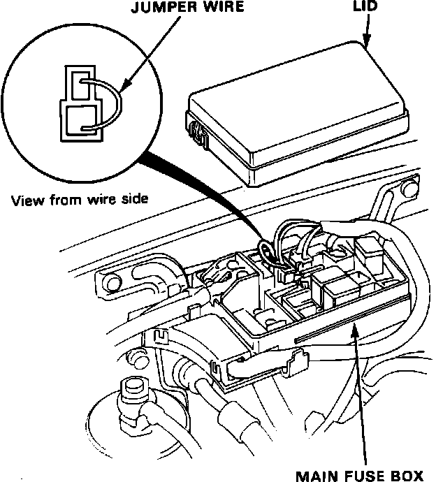
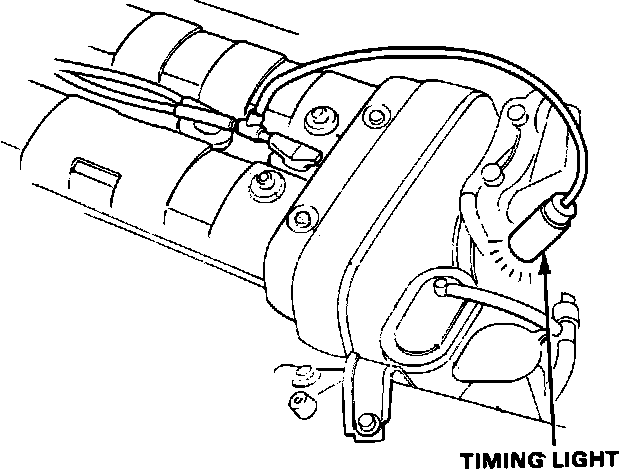
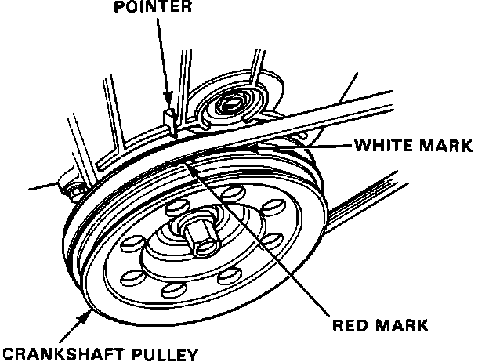
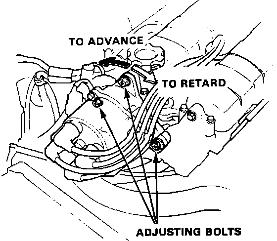

Ignition Timing Adjustment
1. Start the engine and allow it to warm up (cooling fan comes on).2. Remove the main fuse box lid and connect the BR/BL and BR terminals with a jumper wire.
Ignition Timing:

3. Connect a timing light to the engine; while the engine idles, point the light toward the pointer on the timing belt cover.
Ignition Timing:

4. Adjust ignition timing, if necessary, to the following ignition timing specifications:
M/T: 12°+/-2° BTDC (RED) at 750+/-50 rpm in neutral
A/T: 12°+/-2° BTDC (RED) at 700+/-50 rpm in neutral
Timing Mark:

5. Adjust as necessary by loosening the distributor adjusting bolts, and turning the distributor housing counterclockwise to advance the timing, or clockwise to retard the timing.
Ignition Timing:

6. Tighten the adjusting bolts and recheck the timing.
7. Remove the jumper wire and put the lid on the main fuse box.